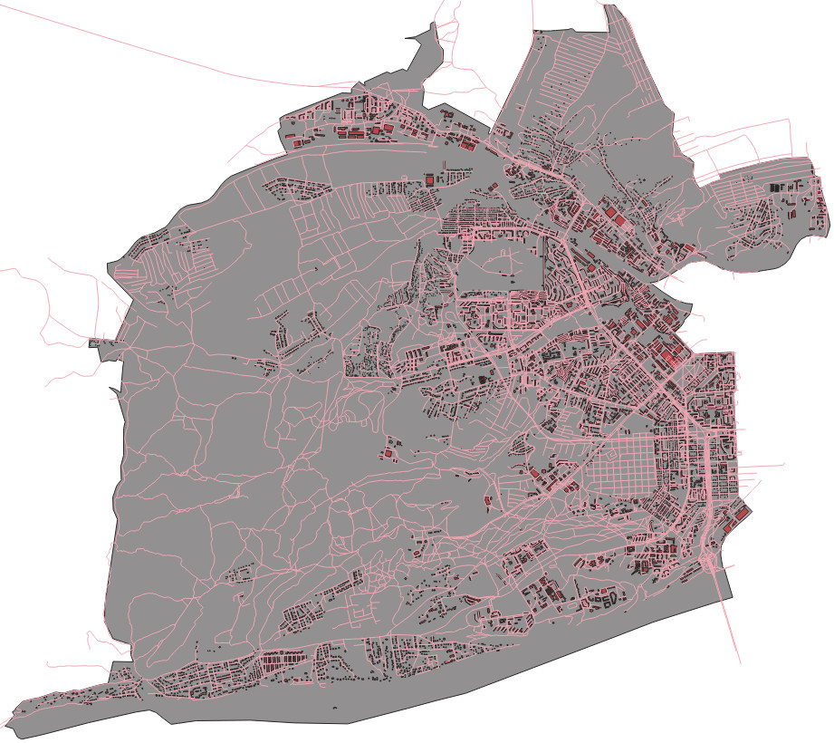
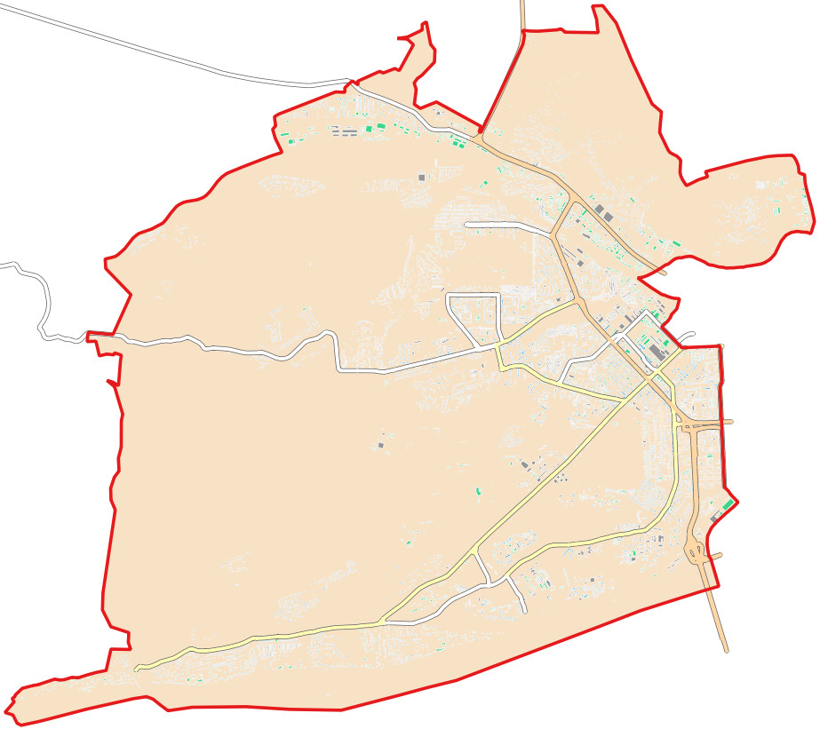
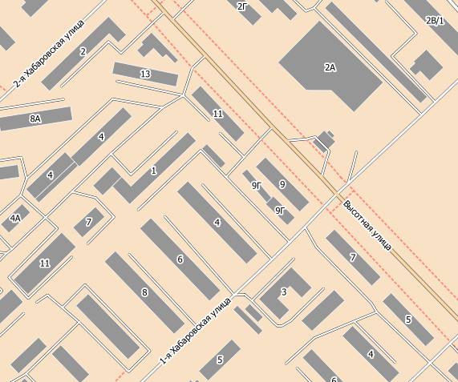
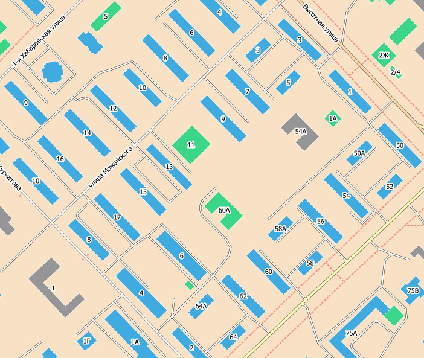
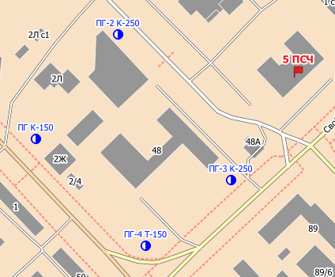
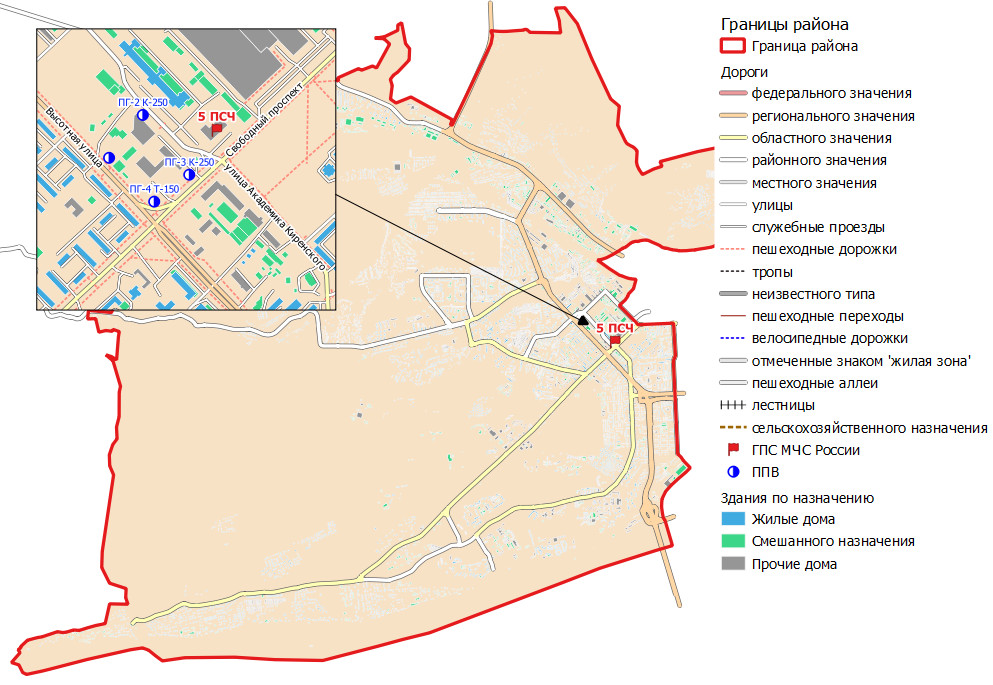

# загрузка библиотеки osmnx
import osmnx as oxОб опыте создания карты района выезда пожарного подразделения с использованием QGIS и открытых картографических данных Open Street Map
Альтернативное название: - Загрузка геопространственных данных Open street map для использования в QGIS
Введение
Описываем проблематику - картографические данные нужны, а их нет. Поэтому удобно использовать данные OSM. При этом можно купить, но для ограниченных задач этого не требуется!
Общие сведения о OSM и QGIS
Библиотеки выгрузки данных
Nominatim Overpass OSMNX QGIS
Здесь же про форматы данных - gpckg
Алгоритм выгрузки данных
- Подготовительный этап - установка и настройка Python, osmnx и QGIS
- Выгрузка необходимых данных из OSM и их сохранение в наиболее подходящем географически ориентированном формате
- Создание нового проекта QGIS
- Импорт полученных данных в QGIS
- Настройка картографической проекции
- Настройка положения слоев данных
- Настройка стилей представления данных
Подготовка рабочей среды
Для успешной работы с языком программирования Python и библиотекой osmnx требуется обеспечить связную работу ряда других библиотек, что может быть затруднительно. Поэтому, для упрощения процесса установки требуемых инструментов была использована система управления пакетами Anaconda. С помощью этой системы была создана специальная виртуальная среда позволяющая как работать с инструментами самого языка программирования Python, так и взаимодействовать с программным интерфейсом библиотеки osmnx.
ГИС QGIS была установлена при помощи официального дистрибутива с сайта разработчиков (https://qgis.org/ru/site/forusers/download.html). В работе использовалась версия QGIS 3.16.16-Hannover.
Более подробно процесс установки Anaconda, osmnx и QGIS описан в соответствующей технической документации []
Все описанные программные решения являются бесплатным и свободно распространяемыми.
Выгрузка необходимых данных из OSM
В работе весь процесс выгрузки данных реализован с использованием инструментов osmnx. Программный код выгрузки данных на ЯП Python представлен ниже.
Для удобства дальнейшей работы весь ход загрузки и сохранения данных в формате geopackage был обернут в специальную функцию.
def dwnld_from_osm_by_place(place, tags, fields, file_name, layer_name):
'''
Функция загружает произвольные данные из области ограниченной географической территорией
и сохраняет их в файле по указанному пути
place - строковое наименование географической территории
tags - набор тегов идентифицирующих данные которые следует загрузить
fields - словарь полей которые следует сохранить для полученного набора.
Ключом является имя поля которое следует сохранить в стартовом наборе,
значением - итоговое наименование поля в результирующем наборе.
Например, {'geometry':'geometry', 'name':'name',
'description':'description', 'amenity':'назначение', 'building':'здание'}.
Поля geometry, name и description являются обязательными, переименовывать их нельзя.
file_name - полное наименование итогового файла (включая путь).
layer_name - наименование слоя данных для отображения в легенде QGIS.
'''
# Загрузка данных из osmnx
gdf = ox.geometries_from_place(place, tags)
# Проверка наличия полей в полученном наборе данных
for field in list(fields.keys()):
if not field in gdf.columns:
del fields[field]
# Преобразование набора данных
gdf_s = gdf[list(fields.keys())]
gdf_s=gdf_s.rename(fields, axis='columns')
# Сохранение
gdf_s.to_file(file_name, driver='GPKG', layer=layer_name)
# Заключение о работе функции - печатаем количество сохраненных записей.
print(f"Сохранено {gdf.shape[0]} записей для слоя {layer_name}")Функция dwnld_from_osm_by_place() загружает произвольные данные из области ограниченной географической территорией и сохраняет их в файле формата geopackage по указанному пути.
Атрибуты функции: - place - строковое наименование географической территории. Например, “Октябрьский район, Красноярск, городской округ Красноярск” - tags - набор тегов идентифицирующих данные которые следует загрузить - fields - словарь полей которые следует сохранить для полученного набора. Ключом является имя поля которое следует сохранить в стартовом наборе, значением - итоговое наименование поля в результирующем наборе. - file_name - полное наименование итогового файла (включая путь). - layer_name - наименование слоя данных для отображения в легенде QGIS.
Отдельно следует обратить внимание на атрибуты tags и fields. Данные атрибуты имеют тип данных словарь.
Атрибут tags содержит словарь отражающий перечень условий которым должны соответствовать данные, для того что-бы быть загруженными. Например, словарь tags={‘building’: True} означает, что в результирующий набор данных будут включены только те записи, у которых имеется поле ‘buildings’. Словарь tags={‘name’:‘Октябрьский район’} позволит получить набор только тех объектов для которых значение поля name будет равно ‘Октябрьский район’.
Базовый запрос возвращает набор данных для которого в перечень полей включены все поля которые встречаются хотя бы в одной из записей. Например, если из десяти тысяч записей в одной имеется поле ‘ship’, то это поле будет добавлено для всего набора, т.е. для всех десяти тысяч записей. Это приводит к неоправданному увеличению размера итогового набора данных и включению в него не представляющих интереса сведений. Атрибут fields позволяет ограничить перечень полей которые будут включены в итоговый набор данных. При этом для большего удобства можно заменить наименования полей набранные латиницей на названия набранные кириллическим шрифтом. Например, {‘geometry’:‘geometry’, ‘name’:‘name’, ‘description’:‘description’, ‘amenity’:‘назначение’, ‘building’:‘здание’}. Поля geometry, name и description являются обязательными, переименовывать их нельзя.
С полным перечнем возможных полей и правилами их применения в объектах OSM можно ознакомиться в документации Open Street Map (https://wiki.openstreetmap.org/wiki/RU:Объекты_карты).
Полученные c использованием функции dwnld_from_osm_by_place наборы данных импортируются в проект QGIS, указывается картографическая проекция для конкретного региона и наконец, настраиваются стили отображения географических объектов.
Пример формирования карты района выезда
Для оценки работы написанной программы были загружены данные для Октябрьского района города Красноярска.
# Наименование географической территории для которой будем выгружать данные:
place = "Октябрьский район, Красноярск, городской округ Красноярск, Красноярский край, Сибирский федеральный округ, Россия"
# Путь к каталогу в котором будем сохранять полученные наборы данных
path = "G:/QGIS/Krsk-2/data/"
# Загрузка сведений о зданиях
# набор тегов идентифицирующих данные которые следует загрузить
tags = {'building': True}
# словарь полей которые следует сохранить
fields = {'geometry':'geometry',
'name':'name',
'description':'description',
'amenity':'назначение',
'building':'здание',
'alt_name':'альт. имя',
'official_name':'оф. имя',
'abandoned':'заброшено',
'ruins':'разрушено',
'disused':'не используется',
'addr:street':'улица',
'addr:housenumber':'дом',
'rooms':'комнат'}
dwnld_from_osm_by_place(place, tags, fields, path+'bld.gpkg', 'здания')
# Загрузка сведений о дорогах
tags = {"highway": True}
fields = {'geometry':'geometry',
'name':'name',
'description':'description',
'highway':'HIGHWAY',
'maxspeed':'макс. скорость',
'oneway':'одностороннее',
'width':'ширина',
'bridge':'мост',
'tunnel':'туннель',
'railway':'ж/д'}
dwnld_from_osm_by_place(place, tags, fields, path+'highways.gpkg', 'дороги')
# Загрузка сведений о границе района
tags = {'type': 'boundary', 'admin_level':'9', 'name':'Октябрьский район'}
fields = {'geometry':'geometry',
'name':'name',
'description':'description'}
dwnld_from_osm_by_place(place, tags, fields, path+'borders.gpkg', 'граница')Полученные наборы данных о зданиях, дорогах и границе Октябрьского района Красноярска были импортированы в проект приложения QGIS. Сразу после загрузки данные представляют собой просто геометрические построения (рис. 1).

Рисунок 1 - Представление полученных данных в QGIS сразу после импорта
Такое представление данных не слишком удобно в работе, поэтому для придания им окончательного, пригодного к работе сотрудников ПСЧ вида, был настроен стиль отображения данных (рис. 2, 3).

Рисунок 2 - Представление данных после стилизации (крупный масштаб)

Рисунок 3 - Представление данных после стилизации (мелкий масштаб)
Полученная в итоге карта интерактивна и позволяет редактировать пространственные и атрибутивные данные объектов в районе выезда, и гибко настраивать их внешний вид. Пользователь может добавить новые здания, удалить неактуальные, внести различные дополнительные сведения и т.д. Также, имеется возможность выделить здания различными цветами в зависимости от их назначения, при условии, что соответствующие данные были указаны (рис. 4).

Рисунок 4 - Выделение цветом зданий различного назначения. Голубой - жилые здания, зеленый - здания смешанного назначения, серый - прочие
Наконец, с учетом специфики работы подразделений пожарной охраны, очень полезной представляется возможность добавления новых слоев с специфическими объектами - такими, как подразделения пожарной охраны или источники наружного противопожарного водоснабжения.

Рисунок 5 - Маркеры источников наружного противопожарного водоснабжения и пожарного депо размещенные на карте QGIS
Для придания завершенного вида и подготовки карте к печати (в случае необходимости) можно использовать инструмент “Макеты”. На рисунке 6 представлен полностью оформленный макет карты района выезда с использованием данных полученных от Open Street Map и дополненные примером сведений о расположении пожарно-спасательного подразделения и источников наружного противопожарного водоснабжения.

Рисунок 6 - Макет итоговой карты района выезда оформленной с использованием макетов QGIS